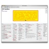

Open Source / Free Software
All my softwares are free and Open Source.
I've learned programming by reading source codes.
I'm doing my part to keep this culture alive.
Enjoy!
-- Aurelio
Mac, Linux, Windows apps
| clitest Portable POSIX shell script that performs automatic testing in Unix command lines. Similar in concept to Python's doctest module. |
|
|  | CSS Sandbox Interactive page to play with CSS properties on-the-fly. Just click and see the effect instantly. |
| MoneyLog Experience Personal finances made real simple: one single HTML file with Javascript smartness. |
|
| txt2tags Converts text files with minimal markup to HTML, XHTML, SGML, LaTeX, Lout, Man page, MoinMoin, MagicPoint and many others -- This site is 100% txt2tags-powered. |
|
| txt2regex Regular expression (regex) wizard for the console. |
|
| sedsed Sedsed can debug, indent, tokenize and HTMLize your SED scripts. |
|
| SedSokoban The Sokoban game written in SED. No, really! :) |
|
| SedArkanoid The Arkanoid game written in SED. |
Mac OS X apps
Mac OS X AppleScripts
| Export Contacts to MP3 Player Copy your Address Book contacts to your MP3 player |
|
| Export Contacts to Yahoo CSV Convert your Address Book contacts to the Yahoo! format |
|
| Gmail to Jabber Batch copy Gmail email to Jabber IM field |
|
| iPhoto SED Smart batch changes on title & comments using Unix SED and Regex |
|
| iPhoto Set Sequential Title Batch change your photos' title using a number sequence |
|
| iTunes Find Artwork-less Find the songs with no Album Artwork set |
|
| iTunes Rename Disk File Rename your audio/video files using their ID3 Tag information |
|
| iTunes Search in Lyrics Search for a text on the songs' lyrics |
|
| iTunes SED Smart batch changes on ID3 info using Unix SED and Regex |
See also
- Installing AppleScripts
A visual guide to install AppleScripts on your Mac - AppleScript VS Python Chart
AppleScript for Python Programmers (and maybe vice versa) - PAD files for software distributors